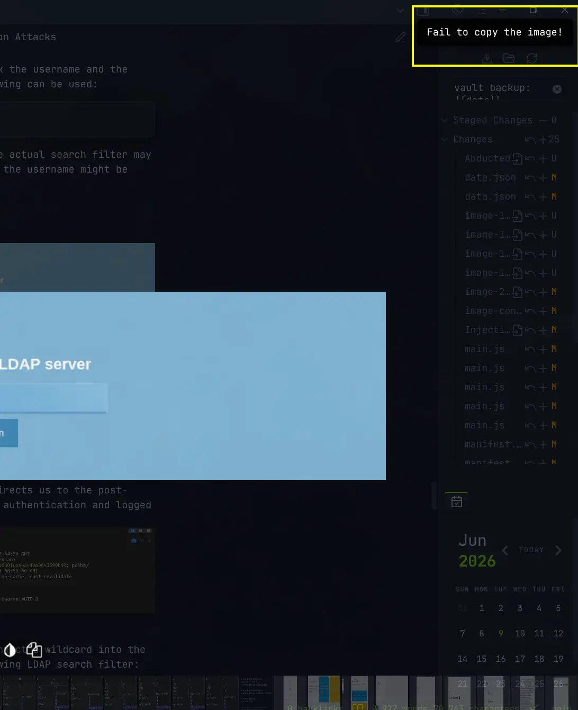
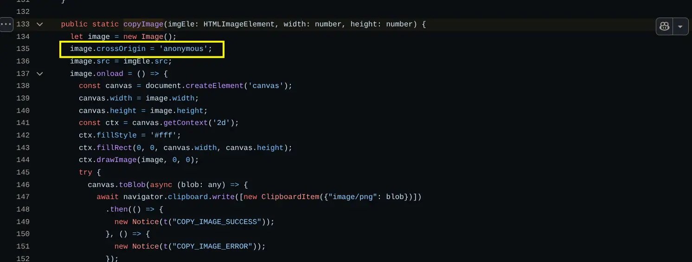
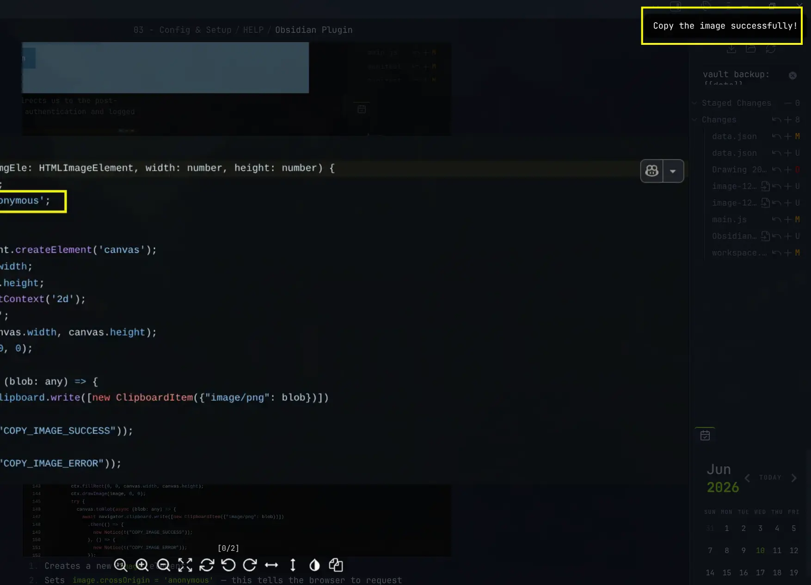
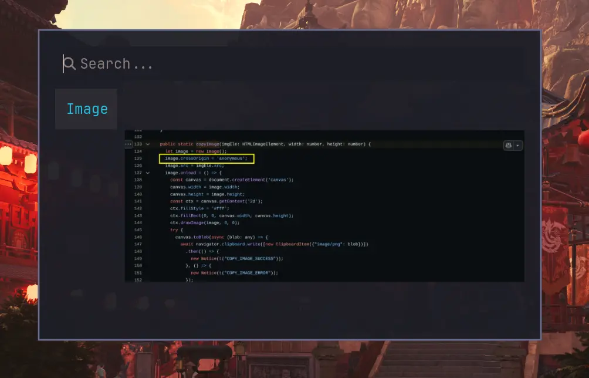

Fixing Image Toolkit Plugin for Obsidian
The walkthrough of how i identified the issue with the image toolkit and how i fixed it

Image Toolkit — Copy Fix Investigaton
The Problem


Investigation
Let’s do some investigation.
I went to the original github repository. After exploring for a while, i found the copyImage method. Here’s what it does:

- Creates a new
Imageelement - Sets
image.crossOrigin = 'anonymous'— this tells the browser to request the image with CORS headers and reject it if those headers are missing - Copies the
srcfrom the displayed image to this new element - On load, draws the image onto a
<canvas> - Calls
canvas.toBlob()to get the image data as a Blob - Writes that Blob to the clipboard via
navigator.clipboard.write()
The crossOrigin = 'anonymous' flag caught my attention. It’s there to allow copying images from external websites, but for local vault images it was never needed — the image and the app are on the same origin, so there’s no cross-origin issue in the first place.
Most of my images are store locally. so i wanna make a smart change on this to fix the issue.
Root Cause
Obsidian changed how it serves local resources. Older versions served local vault images as same-origin file:// or direct paths, so crossOrigin was a no-op and everything worked. Around the 1.8.x builds, Obsidian switched to an internal app://obsidian.md/ protocol for local resources. This protocol doesn’t return CORS headers, so:
- The browser enforces the CORS requirement from
crossOrigin = 'anonymous' - The image either fails to load completely, or
- The canvas gets marked as “tainted” (browser security restriction)
canvas.toBlob()returnsnullinstead of a Blob- The plugin tries to create
new ClipboardItem({"image/png": null})which throws, and the error handler displays “Fail to copy the image!”
The plugin itself never changed — Obsidian’s internal resource handling changed underneath it, breaking the assumption that crossOrigin = 'anonymous' is safe for all images.
The Fix
Two changes to the copyImage method in main.js:
1. Remove crossOrigin
1
2
3
4
5
6
7
8
// BEFORE:
let image = new Image();
image.crossOrigin = 'anonymous';
image.src = imgEle.src;
// AFTER:
let image = new Image();
image.src = imgEle.src;
Since Image Toolkit is desktop-only (isDesktopOnly: true), all vault images are local files. No CORS is needed.
Or you can change the entire function to still work for external images as well.
1
2
3
4
5
6
7
8
9
10
11
12
13
14
15
16
17
18
19
20
21
22
23
24
25
26
27
28
29
30
31
32
static copyImage(imgEle, width, height) {
let image = new Image();
if (imgEle.src.startsWith('https://') || imgEle.src.startsWith('http://')) {
image.crossOrigin = 'anonymous';
}
image.src = imgEle.src;
image.onload = () => {
const canvas = document.createElement('canvas');
canvas.width = image.naturalWidth;
canvas.height = image.naturalHeight;
const ctx = canvas.getContext('2d');
ctx.fillStyle = '#fff';
ctx.fillRect(0, 0, canvas.width, canvas.height);
ctx.drawImage(image, 0, 0);
canvas.toBlob((blob) => {
if (!blob) {
new obsidian.Notice(t("COPY_IMAGE_ERROR"));
return;
}
navigator.clipboard.write([new ClipboardItem({ "image/png": blob })])
.then(() => {
new obsidian.Notice(t("COPY_IMAGE_SUCCESS"));
})
.catch(() => {
new obsidian.Notice(t("COPY_IMAGE_ERROR"));
});
});
};
image.onerror = () => {
new obsidian.Notice(t("COPY_IMAGE_ERROR"));
};
}
2. Add null-check for the blob
Even with the fix above, it’s good practice to guard against toBlob() returning null:
1
2
3
4
5
6
7
8
9
10
11
12
13
14
15
// BEFORE:
canvas.toBlob((blob) => {
navigator.clipboard.write([new ClipboardItem({"image/png": blob})])
...
});
// AFTER:
canvas.toBlob((blob) => {
if (!blob) {
new Notice("Fail to copy the image!");
return;
}
navigator.clipboard.write([new ClipboardItem({"image/png": blob})])
...
});
I also replaced image.width/image.height with image.naturalWidth/ image.naturalHeight for more reliable canvas sizing, and cleaned up an unnecessary __awaiter wrapper around the toBlob callback.
Verdict
The plugin didn’t break — Obsidian did. If you hit this issue, edit your .obsidian/plugins/obsidian-image-toolkit/main.js, find copyImage, remove the crossOrigin line, add a null-check for the blob, and save. Restart Obsidian and copying will work again.
Testing
Now, It worked as usual.  wl-copy after copying an image: